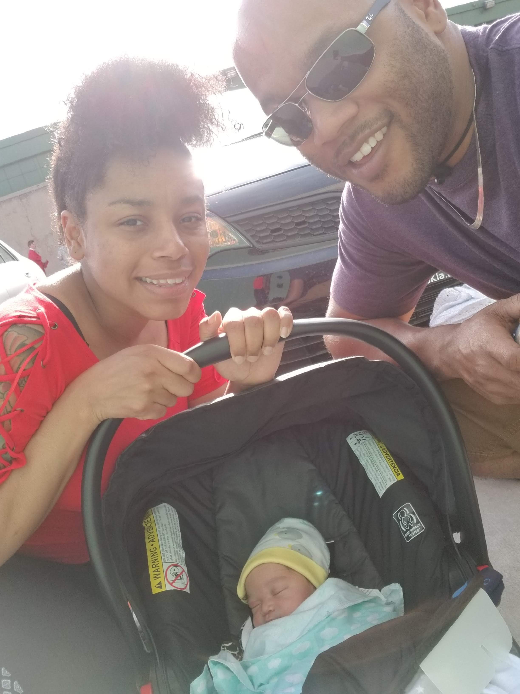

I'm a 27 year old human. On the planet earth, which is round but I'll hear you out because it'll be fun. I have 6 sisters and brothers who have 5 brothers and sister, so pretty big family.
I'm in this immersive for the traditional reason:
I was born bred and fed Denver, CO. I grew up in the Five Points and Park Hill area when it was cheap and kinda sketchy. I went to East High School, would be class of '09, opted for my G.E.D. when I was 15.
Well I've babble in tech more or less my whole life but mostly on a consumer to customer support basisn, no coding. I've research different options over the past couple years and I was either going to teach myself or come hear. I chose to come to Galvanzie to be surrounded by people I could relate to and network with, rather than sitting in my basement telling myself I'm learning to code.